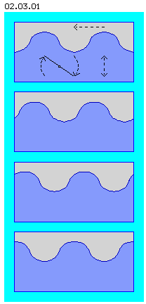
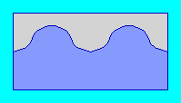

| Alfred Evert | 05.03.2003 |
02.03. Keine Querwelle
Transversalwellen

Das Kennzeichen dieser Querwellen (bzw. Transversalwellen) ist also, dass Teilchen quer (hier auf und ab) zur Ausbreitungsrichtung (vom Zentrum radial nach außen) schwingen. Die Auf- und Abwärtsbewegung erfolgt beschleunigt und wieder verzögert zwischen den Todpunkten der Bewegung.
Beispiel Wasserwelle
Mit dem Doppelpfeil ist die zur Ausbreitungsrichtung quer gerichtete Bewegung des Wassers gekennzeichnet. Wenn man je ein Tal und ein Berg zusammen getrachtet, könnte man diese Bewegung auch als Schaukelbewegung betrachten (gekennzeichnet durch die auf- und abwärts schwingende Wippe).
Keine Todpunkte im Äther
Aller Äther ist in ständiger Bewegung. Da alles mit allem lückenlos zusammenhängend ist, kann keine einzige ´Portion´ Äther nicht in Bewegung sein. Es gibt auch keine separierten ´Einzelportionen´ von Äther, denen beispielsweise die abrupte Änderung der Bewegungsrichtung möglich wäre (beim Wechsel von Auf zu Ab bzw. umgekehrt). Im Äther ist nur fortwährende Bewegung möglich.

Kein Wärmetod
Im Gegensatz dazu zeigt sich das Universum jedoch geradezu kreativ mit der ständigen Schaffung differenzierter Strukturen (und in diesem Sinne von Energie-Gefälle). Dieses ist ein deutlicher Beleg dafür, dass die Substanz des Universums eben nicht aus Teilchen aufgebaut sein kann, sondern der Äther Eigenschaften aufweisen muss, welche im Gegensatz zu den Erscheinungen der materiellen Welt stehen.
Wenn also zumindest der Energiebetrag im Universum konstant bleiben soll, kann dies nur auf den ´ungewöhnlichen´ Eigenschaften des Äthers beruhen. Nur durch seine Lückenlosigkeit kann keinerlei Bewegung ´verloren´ gehen oder gegenseitig kompensiert werden.
Da es in diesem Äther nirgendwo Stillstand geben kann, sind im Äther Transversalwellen (mit periodischem Stillstand) keine zulässige Bewegungsform (auch nicht mit zusätzlicher Drehung, siehe nächstes Kapitel). ´Äther-Wellen´ weisen sehr viel komplexere Form auf (wie in späteren Kapiteln dargestellt wird).
Die zweite bekannte Wellenform ist die der kreisförmigen Ausbreitung eine Welle auf der Wasseroberfläche. Diese Bewegung wird z.B. ausgelöst, wenn ein Stein ins Wasser geworfen wird. Das Wasser unter dem Stein wird nach unten gedrückt, zum Ausgleich wird Wasser daneben angehoben. Diese Hubbewegung nimmt auch von außerhalb (des Wellenzentrums) Wasserteile mit nach oben.
Bild 02.03.01 zeigt schematisch einen Ausschnitt eines Wasserbeckens mit sehr vereinfachter Darstellung von Wellen an der Wasseroberfläche. Rechts von diesem Bild könnte die Wellenbewegung durch obigen Stein ausgelöst worden sein. Die Welle (Berg wie Tal) wandert von rechts nach links durch dieses Bild (markiert durch den oberen Pfeil). Vier Phasen dieser Bewegung sind unter einander eingezeichnet. In der Animation unten ist der Ablauf mit einigen bewegten Bildern visualisiert.
Diese Bewegungen sind uns aus der Mechanik fester Körper bestens bekannt, und analog zur Bewegung fester Körper verhalten sich auch die Teile des Wassers hier. Darüber hinaus gelten Transversalwellen z.B. als Hertzsche Welle beim Elektromagnetismus als verbreitete Bewegungsform. Im Äther selbst aber sind solche Bewegungen nicht möglich - weil Äther keine Todpunkte kennt.
Die bekannten Überlegungen zum ´Wärmetod´ des Universums sind durchaus stichhaltig. Im Bereich der materiellen Welt geht nichts ohne Streu- oder Reibungsverluste vonstatten. Also wird sich alle Bewegung letztlich auf ein gemeinsames, niedrigstes Niveau einpendeln. Im Bereich der materiellen Welt kann darum durchaus Energie ´vernichtet´ werden, indem gegensätzlich gerichtete Kräfte zu null resultieren.
02.04. Nicht Kreis, Gerade, Torus
Äther-Physik und -Philosophie